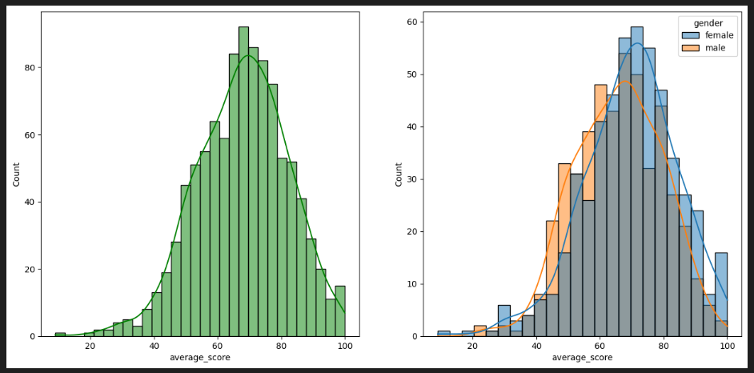
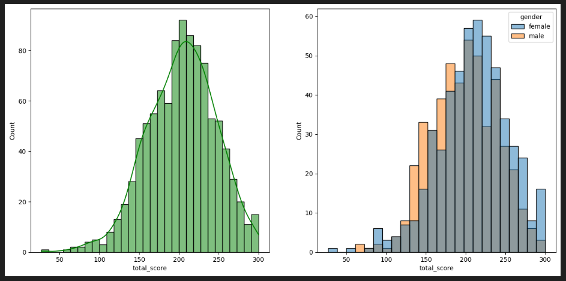
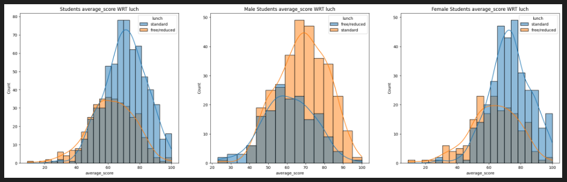
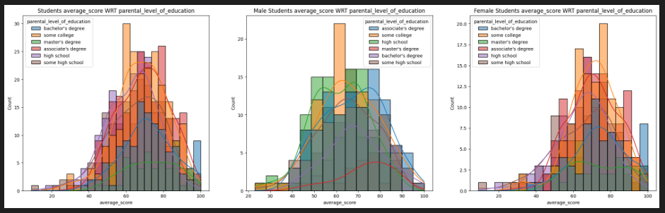
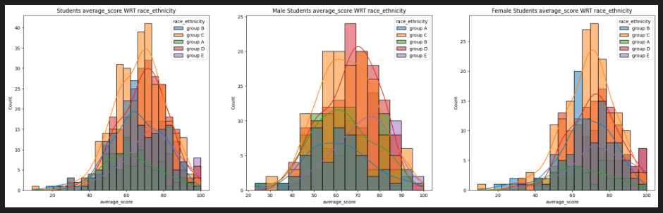
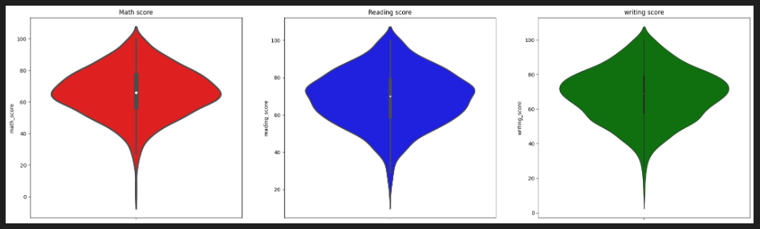
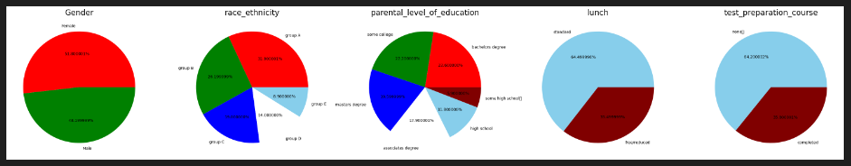
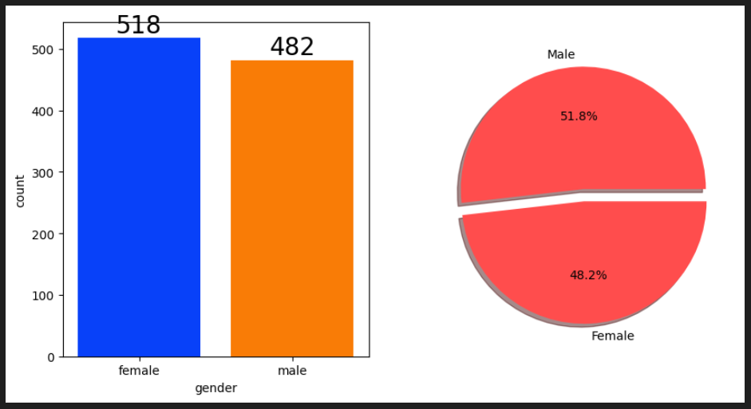
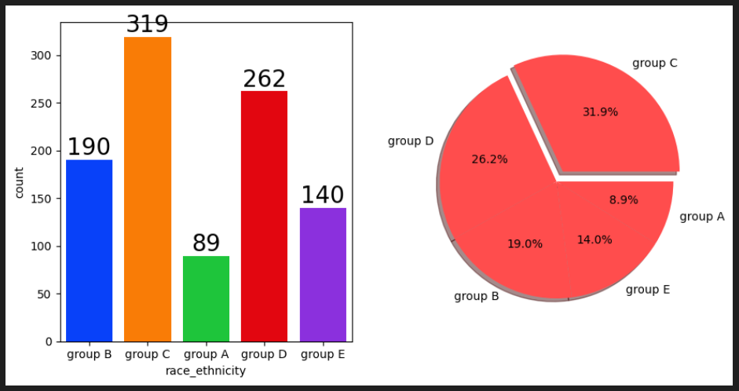
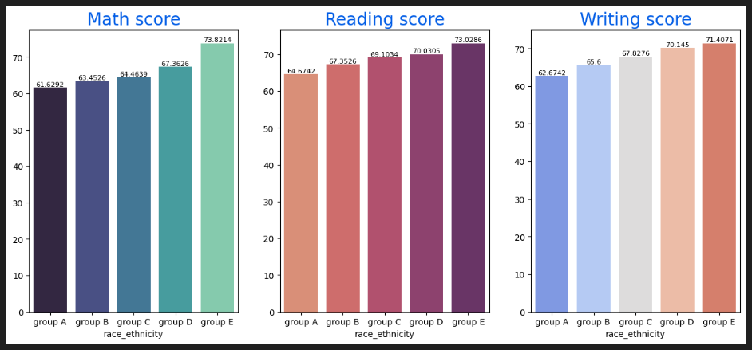

1.Average score of students and WTR gender :

2.Total score of students and WRT gender:

3.Average score WRT lunch, Male students average score WRT lunch and Femal student average score WRT lunch:

4.Average score WRT Parental level of education, Male students average score WRT Parental level of education and Femal student average score WRT Parental level of education:

5.Average score WRT race, Male students average score WRT race and Femal student average score WRT race:

6.Maximum score of students in three subjects:

7.Multivariate Analysis using pieplot:

8.Univariate Analysis (How is distribution of Gender?):

9.Univariate analysis (how is group(race) wise distribution?):

10.Bivariate analysis(Race_ethnicity has any impact on students performance?):
